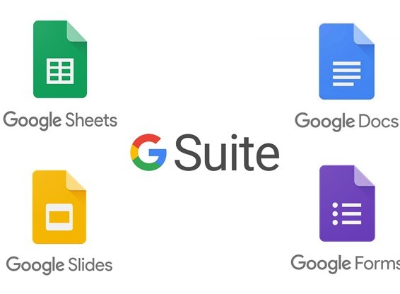

My G Suite Designs.
I have become incredibly proficient in using Google Sheets, Google Docs, Google Slides, and Google Forms. Through consistent practice and continuous learning, I have developed a high level of expertise in these G Suite applications. In Google Sheets, I have honed my ability to manipulate data, create complex formulas, and generate insightful reports with precision and efficiency. My proficiency in Google Docs is evident in my ability to produce polished documents, utilizing advanced formatting techniques, collaborative editing, and version control to deliver high-quality work. Additionally, my mastery of Google Slides showcases my talent for designing visually captivating presentations that effectively convey ideas and engage audiences. Moreover, I have a deep understanding of Google Forms, leveraging its extensive features to create comprehensive surveys, quizzes, and feedback forms that provide valuable insights. Overall, my dedication and commitment to mastering these G Suite tools have elevated my proficiency to an exceptional level, making me a formidable user of Google Sheets, Google Docs, Google Slides, and Google Forms.
The Finance Tracker sheet simplifies financial monitoring and analysis. It is also the sheet that drives my Finance Tracker Application. It contains some background automation: It archives data from the data entry sheet to the Tracker Sheet, It deletes the data on the data entry sheet keeping the formulas, It deletes empty rows from the Tracker Sheet. It contains various worksheets that is filtering data from the Tracker Sheet breaking it down into weeks and months for easy reading.
I have designed a Google Sheet that encompasses various data entry sheets with key performance indicator (KPI) targets. As data is entered into these sheets, a chart is automatically generated, visually depicting whether the entered data falls below or above the target. This dynamic chart effectively tracks the performance against the set goals. Furthermore, to facilitate presentation purposes, the data from the Google Sheet seamlessly feeds into a Google Slide, providing an interactive and visually compelling overview of the KPIs. This integration between the Google Sheet and Google Slide streamlines the process of sharing and presenting the data-driven insights.
The Daily Tracker Google Sheet is a versatile tool designed to help you manage your daily routines efficiently. It includes 12 tabs for each month, with a script that automatically opens the current month. Each tab features a calendar layout to log activities for each day. Key Features: Clean Teeth (AM), Breakfast, Snack, Dinner, Vitamins, Cardio, Weights, Stretch, Yoga, Drank Daily Water Target, Clean Teeth (PM) using tick boxes. In addition to organizing your activities, the sheet generates informative charts to visualize your progress and results. These charts offer valuable insights, enabling you to track habits, exercise, water intake, and more, while staying motivated on your journey to personal growth and wellness.
Introducing our Comprehensive Financial Management Tracker on Google Sheets, a robust tool designed to streamline your financial tracking process. This user-friendly solution allows you to effortlessly input and monitor incoming finances, automatically calculates taxes, and efficiently manages expenses. Smart formulas identify eligible deductions, providing a comprehensive overview of your financial landscape. The real-time insights generated enable informed decision-making, while the end value analysis gives you a clear understanding of your net financial position after accounting for expenses. With its intuitive interface and customization options, this tracker is designed for efficiency, accuracy, and accessibility, making financial management a breeze for users of all expertise levels. Take control of your financial health and optimize your financial management with our Comprehensive Financial Management Tracker on Google Sheets.
The Google Slide presentation seamlessly pulls through the data from the Comms Cell Google Sheet, creating a dynamic and visually impactful presentation. The chart generated in the Google Sheet, reflecting the performance against KPI targets, is effortlessly incorporated into the slides, providing a clear and concise overview of the data-driven insights. This integration between the Google Sheet and Google Slide streamlines the process of creating compelling presentations that effectively communicate performance metrics and facilitate decision-making.